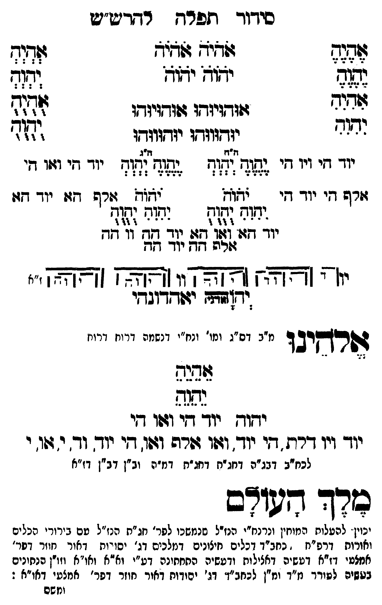

Neue Klartextfassung
=== טבלה === [טור ימין] אֶהֶיֶהֶ יֶהֶוֶהֶ אִהִיִהִ יִהִוִהִ [טור אמצעי] אֹהֹיֹהֹ אֹהֹיֹהֹ יֹהֹוֹהֹ יֹהֹוֹהֹ אוּהוּיוּהוּ אוּהוּיוּהוּ יוּהוּווּהוּ יוּהוּווּהוּ [טור שמאל] אְהְיְהְ יְהְוְהְ אֻהֻיֻהֻ יֻהֻוֻהֻ === סוף טבלה === === טבלה === [טור ימין] יוד הי ויו הי אלף הי יוד הי [טור אמצעי] [ה"ח ה"ג] יֶהֶוֶהֶ יְהְוְהְ יֶהֶוֶהֶ יְהְוְהְ יֹהֹוֹהֹ יֹהֹוֹהֹ יִהִוִהִ יֻהֻוֻהֻ יִהִוִהִ יֻהֻוֻהֻ יוד הא ואו הא יוד הה וו הה אלף הה יוד הה [טור שמאל] יוד הי ואו הי אלף הא יוד הא === סוף טבלה === [תרשים: ארבעה צירופי יהוה בקווים אופקיים ואנכיים המחברים את האותיות. לצדי התרשים וי וי וי וי; ז"א.] יאהדונהי יהוה (אדני) אלהינו [מ"ב דס"ג ומי' ונח"י דנשמה דרוח דרוח] אֵהֵיֵהֵ יֵהֵוֵהֵ יהוה יוד הי ואו הי יוד ויו דלת הי יוד ואו אלף ואו הי יוד וד י או י [לכח"ב דבג"ה דחג"ת דחג"ת דמ"ה וב"ן דב"ן דז"א] מלך העולם [יכוין להעלות המוחין ונרנח"י הנז"ל שנמשכו לפר' חג"ת הנז"ל עם בירורי הכלים והאורות דרפ"ח דכחב"ד דכלים חיצונים דמלכים דג' יסודות דאור חוזר דפר' אמצעי דז"א דעשיה דכללות ורביעיה התחתונה דע"י וא"א ואו"א וזו"ן הנתונים בעשיה לעורר מ"ד ומ"ן לכחב"ד דג' יסודות דאור חוזר דפר' אמצעי דאו"א:]
Original gegen neue OCR · Niqqud für Vergleich ausgeblendet
Original
=== טבלה === [טור ימין] אהיה יהוה אהיה יהוה [טור אמצעי] אהיה אהיה יהוה יהוה אוהויוהו אוהויוהו יוהוווהו יוהוווהו [טור שמאל] אהיה יהוה אהיה יהוה === סוף טבלה === === טבלה === [טור ימין]K101-001 יוד היK101-002 ויו הי אלף היK101-003 יוד הי [טור אמצעי] [ה"ח ה"ג] יהוה יהוה יהוה יהוה יהוה יהוה יהוה יהוה יהוה יהוהK101-004 יוד הא ואו הא יוד הה וו הה אלף הה יוד הה [טור שמאל] יוד הי ואו הי אלף הא יוד הא === סוף טבלה === [תרשים: ארבעה צירופי יהוה בקווים אופקיים ואנכיים המחברים את האותיות. לצדי התרשים וי וי וי וי; ז"א.] יאהדונהי יהוה (אדני) אלהינו [מ"בK101-005 דס"ג ומי' ונח"יK101-006 דנשמה דרוח דרוח] אהיה יהוה יהוה יוד הי ואו הי יודK101-007 ויו דלת הי יוד ואו אלף ואו הי יוד ודK101-008 י או י [לכח"בK101-009 דבג"ה דחג"תK101-010 דחג"ת דמ"ה וב"ן דב"ן דז"א] מלך העולם [יכוין להעלותK101-011 המוחין ונרנח"י הנז"ל שנמשכוK101-012 לפר' חג"ת הנז"ל עםK101-013 בירורי הכלים והאורותK101-014 דרפ"ח דכחב"דK101-015 דכלים חיצונים דמלכים ∅K101-016 דג' יסודות דאור חוזר דפר' אמצעי דז"א דעשיה דכללות ורביעיה התחתונה דע"י וא"א ואו"א וזו"ן הנתונים בעשיה לעורר מ"ד ומ"ן לכחב"ד דג' יסודות דאור חוזר דפר' אמצעי דא"א:]K101-017
OCR · fehlbar
סידוך זפדח רדדיש"יש פלל וזאיש זד"ד [(- לף זוז יזוז ודגש 23 ל די א זודזיזדו ז(ודויודו ל. ז'.' יזדווזדו יודזוזדו )זזי' וז"דז תיגK101-001 יוד זיK101-002 ויו די ([ל(ץ ו[ו7 אנח [ד(-חK101-003 יוד די וגוו די זזרש זיK101-004 יוד דזי -(אגח (תזד. זרש דזו יוך דזו יץךזגח דש ו(ש[דק גהדח עעש[לללל לזא[זא זזל]) יוך דץ2: 2771 160 ילד [קאץ דו ח זא חזא יזך ז יון ' צח [צא] צץצו: [א[אצא (זאאא] י" יד(זשד זזודדוגדי ושרקיב ד מ"בK101-005 דס"ג ומו' ונ"יK101-006 דנשמה דרוח דרויז גפנד ידוך יוך די וזזו ד[י יוךK101-007 ויו דרת . די יוד. וזוו זרה וו. [י יוך- וד. י. דשו.K101-008 י לכח"בK101-009 דבג"ה דג"חK101-010 דחג"ת דמ"ה וב"ן דב"ן דז"א בורך גשוצם ינוי. להעלוחK101-011 המוחין ונרנח"ין הנזדל סנמשכוK101-012 לפר' חג"ת הנז"ל טםK101-013 בירורי הכלים ואורותK101-014 דרפ"ח ' כחב"דK101-015 דכלים חיצונים דמלכים דג' יסורוח דאור חוזר דפר' אמצטי דז"א דטשיה דאצילוח ודעשיה התחתונה דע"י וא"א ואו"א וזו"ן הנחונים בטשיס לטורך גז"ד ומ"ן לכחב"ד'K101-016 דג' יסודות דאור חוזר דפר' אמצעי דאו"א : וזשםK101-017